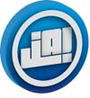
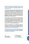
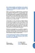
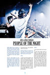
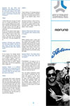
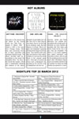
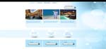
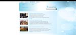
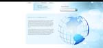

Portfolio
Op deze pagina kunt u mijn werk bekijken. In de toekomst zal mijn portfolio zo veel mogelijk uitgebreid worden. De onderstaande lijst varieert van huisstijlontwerp, tot drukwerk zoals briefpapier, visitekaartjes, magazines en advertenties. Ook kunt hier mijn webdesigns zien.
Project JA!
  {kind=link}
{kind=link}
{kind=link}
{kind=link}
Project:Huisstijlontwerp voor reclamebureau JA!
Datum: april 2012
Reclamebureau JA!
Voor het fictieve reclamebureau JA! in Groningen, heb ik een huisstijlontwerp ontworpen. Ik heb voor een zakelijk maar toch fris design gekozen. Voor dit project heb ik o.a. een logo, website, briefpapieren en visitekaarten moeten maken. Dit was mijn eerste project en ben aardig trots op het resultaat.
NightLife
  {kind=link}
{kind=link}
{kind=link}
Project:Magazine-ontwerp voor NightLife
Datum: april 2012
NightLife
Tijdens de course huisstijlen kreeg de klas als opdracht een tijdschrift te maken. Het onderwerp van het tijdschrift mocht je zelf bepalen. Ik heb ervoor gekozen om een blad voor House-liefhebbers te maken. Het magazine is zodanig geproduceerd, dat het klaar is voor drukwerk in de hoogste kwaliteit.
Magazine Vormgeving
Project:Vormgeving
Datum:april 2012
Magazine Vormgeving
In dit boek worden zaken zoals compositie, ritme en kleur beschreven aan de hand van advertenties en logo's. Dit was een opdracht van school en is gemaakt in InDesign. Het boek bestaat uit 43 pagina's, waarvan een paar hier zijn afgebeeld.
Voorlichtingsfilm Paranoia
Project:Voorlichtingsfilm Privacy
Datum:mei 2012
Paranoia
De casus beschreef dat wij als AV-bureau met de werkgroep een voorlichtingsfilmpje maakten in opdracht van het CBP (College Bescherming Persoonsgegevens). Deze onafhankelijke toezichthouder ziet op grond van de Wet Bescherming Persoonsgegevens er op toe dat persoonsgegevens zorgvuldig worden gebruikt en beveiligd én dat de privacy van burgers ook in de toekomst gewaarborgd blijft. Naar aanleiding van de informatie die het CBP verstrekt op hun website moesten wij een voorlichtingsaudiovisuele maken.
Webdesign DiamondTravels
  {kind=link}
{kind=link}
{kind=link}
Project:Webpagina-ontwerp voor het reisbureau DiamondTravels
Datum:november 2012
DiamondTravels
De opdracht van het blok Web in het kort: is het maken van een professionele website. We hebben onderzoek verricht naar branches, doelgroepen en websites. We hebben een website professioneel vormgegeven, met inachtneming van de belangrijkste usabillity principes.